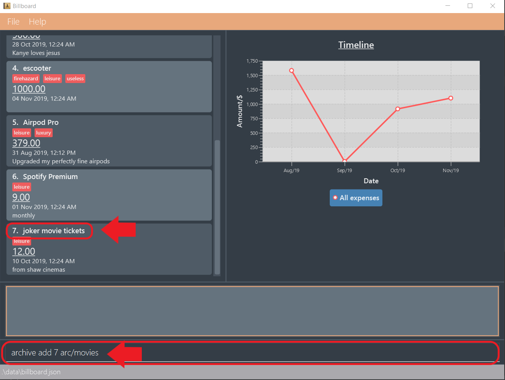
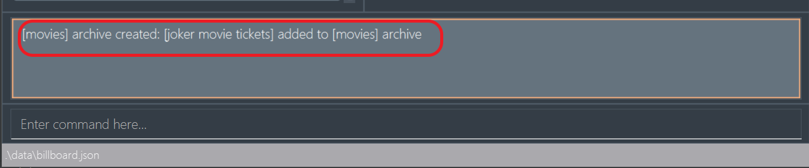

Introduction
Purpose of portfolio
The purpose of this portfolio is to document my overall contributions to the Software Engineering project, Billboard.
About the project
In the Software Engineering Module CS2103T, My team of 5 students were tasked with enhancing an existing addressbook desktop application for our project. We decided to transform the base code of the aforementioned addressbook application into a personal financial management system called Billboard, targeted at students.
This enhanced application enables students to record their daily expenses and has advanced expense tracking and management features. The advanced features for tracking expenses are generating graphs from expense data, and filtering capabilities; while the advanced features for managing expenses are tagging and archiving expenses.
Since Billboard is a Command Line Interface (CLI) application, meaning that all interactions between user and the application are done through typing only, it is meant for students who type fast. Furthermore, Billboard also has a fully functioning Graphical User Interface (GUI), making it user friendly.
The role I played in this project was to design and implement the code for the archive feature. Additionally, I was
tasked with improving the application’s aesthetic design by adding major cosmetic tweaks to the application’s GUI.
The following sections illustrate these enhancements in greater detail, including the relevant documentation I have added to the user and
developer guides concerning these enhancements.
Note the following formatting used in this document:
| This symbol indicates important information. |
archive - Text in Consolas font colored red indicates that this is a command that can be inputted into the command line and executed by Billboard.
ArchiveWrapper - Bold text in Consolas font colored red indicates a component, class, object or variable in the architecture of Billboard.
"movie tickets" - Italicised text with quotation marks indicates the name of an expense or archive used for demonstration purposes.
Summary of contributions
This section summarises what I have contributed to Billboard. This comprises of technical, documentation or any other meaningful contributions.
-
Major enhancement: I added all archive related functions.
-
What it does: My enhancement allows the user to create archives, add an expense to an archive, revert/"unarchive" an archived expense and permanently delete expenses in an archive.
-
Justification: Suppose users have old or outdated expenses but they do not want to permanently delete them as they may refer to these expenses again in the future for accounting purposes. Users can simply archive these expenses, which de-clutters their list of current expenses. Furthermore, as users are able to group expenses into different archives, they are offered greater flexibility in expense organisation. Therefore, this feature contributes great value to the application, as it provides users with a method of organising and tracking their expenses in the long run.
-
Highlights:
-
This enhancement works well with most existing features and features to be added in future. This is because expenses that are archived cannot be edited (e.g. adding a tag) as they are considered as "non active" expenses and are being kept as records only. Therefore the archive enhancement, in a sense, is isolated from the other expense modifying enhancements which reduces the possibility of archive bugs due to integration with other features.
-
A thorough analysis of other design alternatives was required as the archive feature involved storing and maintaining multiple distinct lists of expenses, and so different designs to implement this would yield varying results regarding the application’s overall speed performance.
Ultimately, the design of the current implementation was chosen as it is relatively easy to implement and maintained the application’s performance above the acceptable benchmark. This benchmark is the non functional requirement of being able to hold up to 1000 expenses without a noticeable sluggishness in performance for typical usage.
-
-
-
Code contributed: [Functional code tracked with RepoSense]
-
Other contributions:
-
Project management:
-
There are 5 releases of Billboard in total, consisting of versions 1.1, 1.2, 1.2.1, 1.3 and 1.4. I managed and released versions 1.1 and 1.2 on Github.
-
-
Enhancements to existing features:
-
I designed and implemented the default Billboard color scheme, called the "Inertia theme", to give the application its unique aesthetic identity and make it more user-friendly. Additionally, I added an extra Pastel color theme for users who prefer a brighter interface (Pull request #104)
-
-
Documentation:
-
I wrote the team’s About Us document, which consisted of information about our team members: #7
-
I added our project’s user stories, use cases and non functional requirements to the Developer Guide: #19
-
I renamed all instances of placeholder name "Financial Tracker" to "Billboard" in User Guide, Developer Guide and Readme documents: 26
-
-
Community:
-
Contributions to the User Guide
Given below is an excerpt from the Billboard User Guide detailing instructions on how to use the new archive feature I added.
This excerpt reflects my ability to write documentation meant for students, the targeted user group of the application, in a clear and concise manner so that they will be able to easily
understand what each archive operation does and how to use them.
Do note that due to the page limit, only the feature preface and the Adding an expense to an archive: archive add sections are included in full as a sample representative of my documentation skills.
The documentation of the other commands will be an abbreviated version (Step-by-step example usage for these commands are left out).
You may refer to the Billboard User Guide
for the full version.
Archiving past expenses: archive
This feature allows you to archive expenses. An expense is archived when you want remove it from the current list of expenses, but still want to keep a record of it and retrieve it again in the future for accounting purposes.
|
Archived expenses cannot be edited. Archived expenses are not considered current and "active" expenses so you are unable to edit them. You would need to unarchive an expense first before you would be able to perform expense editing commands on it such as edit, tag add and tag remove commands.
|
Although this section of the user guide provides comprehensive information on the usage of archive commands,
you could also view the list of all supported archive commands within the application by typing the command word archive
into the command box and press Enter.
The following are all the archive commands, descriptions of how they work and their usage.
Note the formatting of command parameters used in this section:
-
[INDEX]: The list index of the expense involved in the command.
-
arc/: Prefix to indicate that the text appended to it is the specified archive name. -
[ARCHIVE NAME]: Specified name of archive involved in the command. Archive name is case-sensitive and must be non-empty. Names with symbols and multiple words are accepted as well.
Adding an expense to an archive: archive add
This command allows you to transfer the expense at the specified index to your specified archive.
If the archive you entered does not exist, then a new archive is created before the expense is added.
Usage:
archive add [INDEX] arc/[ARCHIVE NAME]
Example:
Suppose you want to archive the expense called "joker movie tickets" to an archive called "movies".
To archive the expense:
-
Type
archive add 7 arc/moviesinto the command box, and pressEnterto execute the command:The expense "joker movie tickets" is at index 7 in the list.
-
The next step can be split into 2 scenarios:
-
2a. There is no existing archive called "movies"
A new archive called "movies" is created before "joker movie tickets" is added to it.
The result box will display the message to indicate the archive creation and transfer of the expense: -
2b. There is an existing archive called "movies"
"joker movie tickets" is simply added to the existing "movies" archive.
The result box will display the message to indicate the transfer of the expense:
-
Listing out all archives: archive listall [Abbreviated]
This command informs you of all the existing archives by displaying a list of all existing archive names.
Usage:
archive listall
Listing expenses in a particular archive: archive list [Abbreviated]
This command allows you to view the list of expenses of your specified archive.
Usage:
archive list [ARCHIVE NAME]
Deleting an archived expense: archive delete [Abbreviated]
This command allows you to delete the expense at the specified index from your specified archive.
If the archived expense you deleted was the last expense in the archive, the empty archive will be deleted.
Usage:
archive delete [INDEX] arc/[ARCHIVE NAME]
Reverting an archived expense: archive revert [Abbreviated]
This command allows you to revert/unarchive the expense at the specified index from your specified archive, transferring it back to your current list of expenses.
If the archive expense you reverted was the last expense in the archive, the empty archive will be deleted.
Usage:
archive revert [INDEX] arc/[ARCHIVE NAME]
Contributions to the Developer Guide
Given below are my documentation in the Developer Guide. They reflect my ability to write technical documentation and showcase the technical depth of my contributions to the project.
Do note that due to the page limit, the Full Sequence Diagram and Activity Diagram of AddArchiveCommand are omitted.
You may refer to the full Billboard Developer Guide to view these diagrams.
Archive
Implementation
Modelling Archive
The archive feature supports the following actions:
-
Creating an archive
-
Adding an expense to an archive
-
Reverting/"unarchiving" an archived expense
-
Deleting an archived expense
-
Displaying the list of expense of a particular archive
-
Listing all existing archive names
These actions are facilitated by the ArchiveWrapper and Archive classes:
ArchiveWrapper and Archive classes-
Archiveextends fromExpenseListin order to encapsulate an archive name and a list of expenses together as an archive. -
ArchiveWrappermanages all existing archives and hashes eachArchiveobject to its archive name.
The implementation of the archive feature is located in the Model component in terms of the overall architecture of Billboard.
ArchiveWrapper is used in ModelManager to manage all archives. Its respective operations are called to access and manipulate archive expenses when an archive command is entered.
Such operations include:
-
ArchiveWrapper#AddArchive(Archive)- Adds the given archive to the current map of archive objects. -
ArchiveWrapper#HasArchive(String)- Checks if the specified archive by the given archive name exists. -
ArchiveWrapper#removeArchive(Archive)- Deletes the given archive from the current map of archive objects. (Assumes given archive already exists) -
ArchiveWrapper#hasArchiveExpense(String, Expense)- Checks if the specified archive by the given archive name has the given expense. -
ArchiveWrapper#addArchiveExpense(String, Expense)- Adds the given expense into the specified archive by the given archive name. (Assumes given archive already exists) -
ArchiveWrapper#removeArchiveExpense(String, Expense)- Deletes the given expense into the specified archive by the given archive name. (Assumes given archive and expense already exists) -
ArchiveWrapper#getArchiveNames()- Returns a set of all existing archive names
These operations are exposed in the Model interface with respective methods of the same name.
E.g Model#addArchive(Archive) calls ArchiveWrapper#AddArchive(Archive)
Given below is an example usage scenario of the add expense to archive function, showing how the command is parsed in Logic and how it interacts with Model:
Step 1. The user has the application running and has a non empty list of current expenses. The user can enter the list command to bring up
this list.
Step 2. The user executes the command archive add 3 arc/archiveName to archive an expense.
The command is first parsed by BillboardParser to determine what kind of general command it is. archive indicates it is an archive command so the remaining input is parsed through ArchiveCommandParser.
ArchiveCommandParser determines which archive command should be called. add indicates it is an add command, so the input is parsed for the final time through AddArchiveCommandParser to extract out the arguments entered for the operation.
In this case, the arguments are 3 and archiveName
This layered parsing process can be visualised below:
AddArchiveCommand in a cropped sequence diagramStep 3. AddArchiveCommandParser then returns an AddArchiveCommand object to be executed. The AddArchiveCommand performs two checks before executing any changes:
-
First, it is changed if entered index,
3, is a valid index from the current expense list. An exception is thrown and the command is aborted if the index is invalid, soModelis left unmodified in this case. -
Next, it is checked if the entered archive name,
archiveName, is an existing archive by callingModel#HasArchive(String). If the archive does not already exist, then a new archive is created with the given archive name usingModel#addArchive(Archive).
After the checks are completed and if no exception is thrown, the command executes the archiving of the expense through these steps:
-
The expense to be archived is first retrieved by
Model#getFilteredList()#get(int) -
The expense is then deleted from the list of current expenses by calling
model#deleteExpense(Expense) -
Next, the expense’s
archiveNamefield is updated usingExpense#archiveTo(String) -
Lastly, the expense is added to the specified archive using
Model#addArchiveExpense(String, Expense)
These interactions with Model by AddArchiveCommand can be shown in the cropped portion of the full sequence diagram below:

Model and AddArchiveCommand during the execution of the commandStep 4. Finally, a CommandResult object initialised with the add expense to archive success message is returned to indicate to the user that the operation was successful.
Full Sequence diagram of the operation:
(Diagram omitted due to page limit)
The following activity diagram summarizes what happens when a user executes a new AddArchiveCommand:
(Diagram omitted due to page limit)
Storing Archive
All expenses, archived and non-archived, are stored in a single JSON file.
Upon start up of the application, all expenses are retrieved from JSON format and passed into
ModelManager as a combined Billboard object. During the initialization of ModelManager, the expenses in this Billboard object are filtered out into non-archived and
archived expenses by each Expense object’s archiveName field. The separate lists of non-archive and archive expenses are then used to initialize new Billboard and
ArchiveWrapper objects of ModelManager respectively. The Billboard object of ModelManager is used to maintain non-archive expenses.
After each command is executed, the expenses in Model are saved into the JSON file. The method Model#getCombinedBillboard is called which collates all Expense objects
from its Billboard and ArchiveWrapper objects together into a single list and creates a new combined Billboard object. This combined Billboard is returned and used by
Storage to serialize into JSON format and writes it into the JSON file.
Design Considerations
Implementing the archive feature is a non-trivial task, thus there are many possible ways of designing it. This section offers an evaluation of the alternative designs.
Aspect: Data Structure to hold archives in ArchiveWrapper
-
Alternative 1 (Current implementation): Use of HashMap, mapping each archive name to its
Archiveobject-
Pros: Accessing data in a HashMap is instant. Therefore, retrieving an archive when performing add/delete archive expense operations or checking if an archive exists is fast.
-
Cons: As
ArchiveWrapperis initialized with a single list of archiveExpenseobjects, the initialization process is slower as this given list needs to be iterated through to filter eachExpenseobject into their respectiveArchiveobjects in the HashMap.
-
-
Alternative 2: Use a single list to store all archive expenses
-
Pros: Initialization of
ArchiveWrapperis fast, as the given list of archive expenses need not be processed. -
Cons: Some operations, like delete archive expense or get all archive names, are slower as the entire list must be iterated through each time in the worst case scenario. For example, to check if an expense exists in a particular archive, the entire list must be iterated if the expense to be found is at the end of the list.
-
Aspect: Storing archives
-
Alternative 1 (Current implementation): Storing non-archive and archive expenses together
-
Pros: No new storage classes need to be implemented, as this implementation uses the existing classes only.
-
Cons: Initialization process of
ModelManageris slower as the expenses need to be filtered into archive and non-archive expenses first.
-
-
Alternative 2: Storing archive expenses as
Archiveobjects in a separate file-
Pros: Initialization process of
ModelManageris faster, as itsArchiveWrapperobject can be initialized directly with the list ofArchiveobjects retrieved from the JSON file. No filtering of archive and non-archive expense from the same list is needed. -
Cons: More difficult to implement, as more JSON storage classes must be added and knowledge on serialising and deserialising new objects is needed.
-